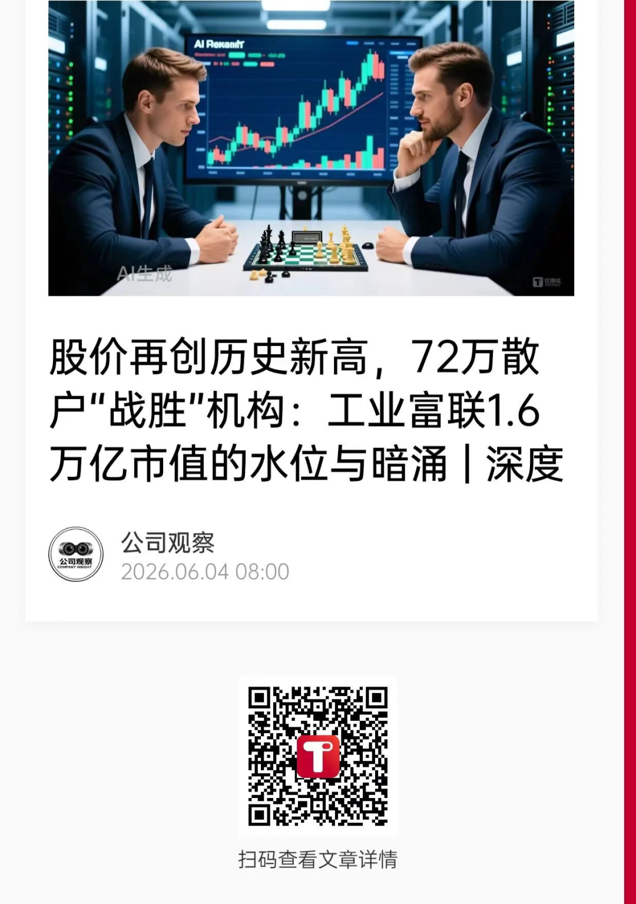
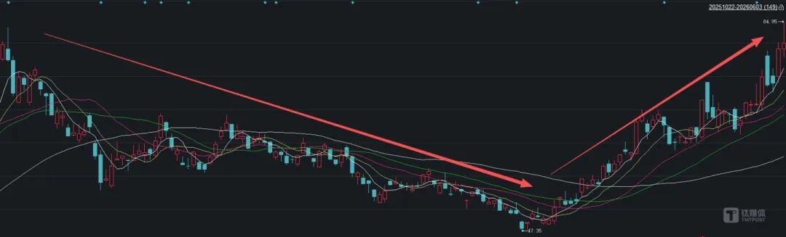
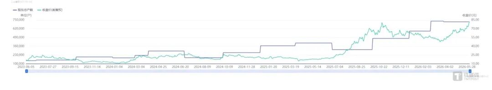
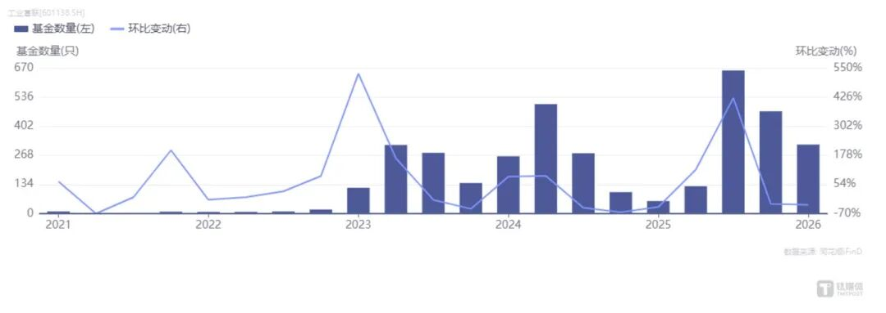
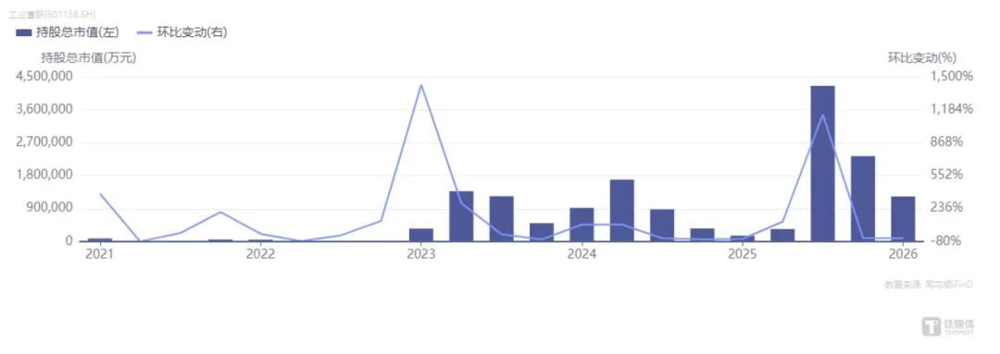
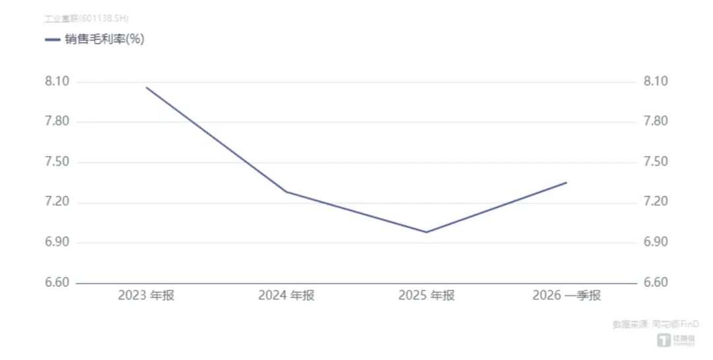

📈 股价再创历史新高，72万散户“战胜”机构：工业富联1.6万亿市值的水位与暗涌
Foxconn Industrial Internet Hits New Record High: 720K Retail Investors vs Institutions at 1.6 Trillion Market Cap

常年7%低毛利坐拥近40倍PE估值valuation[ˌvæljuˈeɪʃn] n. 估值；估价，72万散户抱团撑起万亿市值信仰。
资本市场永远在泡沫与价值之间反复摇摆，2025至2026年席卷全市场的AI算力产业热潮，将这种估值悖论paradox[ˈpærədɒks] n. 悖论；矛盾在工业富联身上演绎到极致。
2026年6月3日盘中，工业富联股价突破84.95元，超过10月创下的历史最高价83.42元，市值突破1.6万亿，成为A股电子代工板块有史以来市值天花板ceiling[ˈsiːlɪŋ] n. 天花板；上限级标的。
缔造这份万亿估值奇迹的并非公募、社保等专业机构资金，而是超72万户散户投资者investor[ɪnˈvestər] n. 投资者；在数百家机构接连减仓出逃、批量兑现筹码的背景下，散户资金逆势contrarian[kənˈtrɛriən] adj. 逆势的；反向的入场接盘流通盘，走出散户赢机构的另类行情。
但剥开1.6万亿市值的华丽外壳，公司底层经营数据却和科技属性的市值定价形成天壤之别：公司综合毛利率常年锁定在7%左右，净利率不足5%，营收增长高度依赖代工规模放量，盈利水平始终困在薄利多销的传统制造逻辑里，和市场对标纯正AI硬件企业的高成长属性完全脱节decouple[diːˈkʌpəl] v. 脱节；分离。
数据层面的错位直观体现在估值上：当前工业富联滚动市盈率（PE-TTM）39.57倍，是A股电子制造行业平均10倍PE的近4倍，估值水位比肩rival[ˈraɪvəl] v. 比肩；匹敌拥有自研芯片、核心软硬件技术的AI科创企业。
从脱胎于富士康代工体系登陆A股，到借AI风口tailwind[ˈteɪlwɪnd] n. 风口；顺风摇身变为算力核心标的，工业富联的资本故事已经持续两年。市场分歧从未平息：多头坚信AI服务器代工放量将倒逼公司毛利率抬升，代工龙头完成向科技企业的价值蜕变transformation[ˌtrænsfərˈmeɪʃn] n. 蜕变；质变；空头笃定组装代工无核心技术壁垒barrier[ˈbæriər] n. 壁垒；障碍、盈利天花板固化，万亿市值大半由概念炒作催生。
万亿估值的拉锯背后，72万持仓散户的资产命运，被绑在AI行业景气prosperity[prɒˈsperɪti] n. 景气；繁荣周期与制造业基本面的天平两端，一旦预期落空，
72万散户信仰faith[feɪθ] n. 信仰；信念支撑股价创新高
股价冲高回落、机构持续兑现离场，散户逆势大举进场锁仓，是本轮工业富联估值逆势走高最反常abnormal[æbˈnɔːrməl] adj. 反常的；异常的的市场特征，也是万亿市值能够顶住机构抛压的底层支柱，更是72万散户实现“战胜数百家机构”的核心由来。
回溯retrospect[ˈretrəspekt] n. 回溯；回顾2025年10月至2026年3月的完整行情周期，能够清晰看见散户资金从观望到集体抱团、接下机构抛盘的全过程。

2025年10月底，工业富联股价摸至83.42元阶段性历史高点，算力题材炒作迎来首轮兑现窗口，在全球AI短期降温、海外云厂商资本开支预期微调的利空bearish[ˈbɛərɪʃ] adj. 利空的；看跌的催化下，股价开启断崖式回调，短短5个月时间一路下行至47.35元低位，最大回撤超43%。
彼时全市场卖方研报集体转向谨慎cautious[ˈkɔːʃəs] adj. 谨慎的；审慎的，多数券商预判算力题材泡沫破裂、工业富联估值将向传统代工估值中枢回归，机构资金加速离场，市场一度看空情绪拉满。但出乎全市场意料，下跌没有带来崩盘crash[kræʃ] n. 崩盘；暴跌，反倒成为散户批量进场的黄金窗口，用真金白银接住机构抛出的流通筹码。

股东户数变化是散户抱团最直观的数据佐证evidence[ˈevɪdəns] n. 佐证；证据：2025年三季度末，工业富联在册股东仅47.6万户，筹码高度集中在公募、社保、券商自营等机构手中；伴随股价腰斩halve[hæv] v. 腰斩；减半级回调，从2025年年末到2026年3月末，短短半年新增25万持仓账户，股东总数一举突破72万户。横向对比全A股，72万股东户数位列rank[ræŋk] v. 位列；排名全市场第十五位，远超多数万亿市值蓝筹标的。
笔者梳理雪球、东方财富股吧、同花顺圈子等投资者社区留言，并对话三名不同持仓逻辑的个人投资者，三种心态勾勒出72万散户群体的分化缩影，也埋下抱团松动的隐患hazard[ˈhæzərd] n. 隐患；风险。
投资者A是深耕cultivate[ˈkʌltɪveɪt] v. 深耕；培育电子板块五年的个人股民，他在2025年年底股价回落至60元附近率先底仓布局，在股价下探48元关键支撑位时选择重仓加仓，本轮股价反弹后整体持仓浮盈突破40%。“当时市场全在唱空算力泡沫，但我认准工业富联是A股稀缺scarce[skɛrs] adj. 稀缺的；罕见的的AI服务器核心代工龙头，大跌就是错杀，算力是未来十年确定性赛道，回调就是黄金上车机会。”该投资者坦言，目前仍保留七成仓位，坚定steadfast[ˈstedfæst] adj. 坚定的；不动摇的长期持有算力成长逻辑。
与之形成鲜明对比的是投资者B，同样在49元附近抄底入场，如今账面浮盈超30%，却始终处在持仓焦虑anxiety[æŋˈzaɪəti] n. 焦虑；忧虑之中：“股价涨速远超行业基本面改善速度，明明财报毛利率没有太多提升，估值却蹭着算力概念一路走高，理智告诉我股价已经高估，但又害怕过早卖出踏空后续行情，进退两难。”
还有一批偏稳健prudent[ˈpruːdənt] adj. 稳健的；审慎的的保守型散户，在持仓浮盈达到20%-30%区间便陆续减仓、甚至清仓离场，选择落袋为安。在他们看来，依靠题材炒作催生spawn[spɔːn] v. 催生；引发的股价上涨，高位回调风险难以预判，落袋收益远比纸面浮盈更加稳妥。
形形色色的普通投资者依托全网传播的算力赛道叙事，在股价低位达成统一持仓共识consensus[kənˈsensəs] n. 共识；一致意见，分散在72万个账户中的海量流通筹码，牢牢锁定二级市场可交易股份，成为托举工业富联万亿市值的底层支柱，并让股价再创历史新高。
但分化严重的持仓心态也暗藏隐忧：72万散户抱团并非基于统一的业绩兑现预期，而是依靠全网流传的“AI算力长线景气”叙事凝聚共识，贪婪greed[ɡriːd] n. 贪婪；贪欲与恐慌两种情绪长期在散户群体内部拉扯。
一旦后续算力订单落地不及预期、财报数据持续走弱，原本稳固的筹码结构随时会出现集体松动，集中抛售极易诱发踩踏stampede[stæmˈpiːd] n. 踩踏；蜂拥行情。
如果说散户是工业富联超高估值的托底underpin[ˌʌndərˈpɪn] v. 托底；支撑力量，那么机构资金从极致抱团到系统性出逃的态度转向，是全市场多空分歧最具象的体现。
同花顺iFinD基金持仓数据显示，短短两个季度，公募机构完成从重仓锁仓到批量清仓的极致反转reversal[rɪˈvɜːrsəl] n. 反转；逆转，持仓规模近乎腰斩，用资金流向印证对公司估值逻辑的分歧。
2025年9月末，也就是工业富联冲击83.42元股价高点前夕，全市场重仓布局的公募基金数量创下历史峰值peak[piːk] n. 峰值；顶点659只，头部公募、全国社保、头部券商自营扎堆持仓，基金合计持仓市值高达425.77亿元，机构抱团成为本轮股价冲高的核心推手。
彼时机构统一的买入逻辑落脚于：AI服务器规模化量产将打破工业富联常年低毛利困局，算力业务占比抬升推动公司从低端组装代工厂向高附加值硬件科技企业转型transition[trænˈzɪʃn] n. 转型；转变，估值有望对标纯正AI硬件上市公司。


转折紧随10月股价见顶如期而至，基金开启持续性、大面积减仓：截至2025年12月末，持有工业富联的基金数量骤降plunge[plʌndʒ] v. 骤降；暴跌至471只，环比降幅28.53%，基金持仓市值减少至233.63亿元，单季度账面减少45.15%；进入2026年一季度，减持趋势进一步加剧intensify[ɪnˈtensɪfaɪ] v. 加剧；增强，在册基金仅剩318只，环比再度下滑32.48%，基金持仓总市值滑落至123.47亿元，对比历史峰值，机构持仓市值累计减少超70%。数据背后既有大批量基金产品全额清仓离场，留存持仓的机构也在持续减仓，用实际操作推翻override[ˌoʊvərˈraɪd] v. 推翻；否决此前重仓逻辑。
笔者联络了多位不便具名的业内投研从业者practitioner[prækˈtɪʃənər] n. 从业者；执业者，两类机构观点呈现泾渭分明的对立格局。一名此前深度重仓、后续逐步清仓的公募电子行业研究员向笔者坦言：“当初重仓布局，核心逻辑是预判AI服务器规模化落地能够打破富联常年低毛利桎梏shackle[ˈʃækəl] n. 桎梏；束缚。连续几份财报毛利率变化不明显，此前的成长预期彻底落空void[vɔɪd] v. 落空；失效，居高不下的PE已经不符合产品风控标准，只能陆续清仓避险。”
与之形成鲜明反差contrast[ˈkɒntræst] n. 反差；对比，一位手握大额底仓的券商自营业务从业者坚持长期持仓逻辑：“不能简单套用传统代工估值标尺衡量工业富联，全球云计算巨头未来数年算力资本开支是万亿级别长线刚需，短期毛利率低迷是代工行业阶段性特征，后续海量订单落地带来的营收高速增长，足以慢慢消化当下偏高的估值，阶段性股价下跌只是市场短期情绪扰动。”
机构多空博弈带来股价宽幅震荡volatility[ˌvɒləˈtɪləti] n. 震荡；波动，一边是专业资金持续撤离，一边是散户源源不断接盘，这种错位的资金持仓结构，不断放大工业富联估值的不稳定性，也是万亿市值始终摇摆不定的关键诱因。
7%毛利率与40倍PE的价值错配mismatch[ˈmɪsmætʃ] n. 错配；不匹配
工业富联所有市场争议的核心落点，最终汇聚在一组无法调和的数据矛盾：7%上下的制造业毛利率，对标接近40倍的科技赛道市盈率，传统代工盈利底色undertone[ˈʌndərtəʊn] n. 底色；底层特质与AI概念估值形成根本性错配，也是万亿市值背后泡沫争议的源头。

从财报硬数据看，工业富联代工底色毫无遮掩conceal[kənˈsiːl] v. 遮掩；隐藏：2025年全年营收突破9000亿元，营收规模稳居国内电子制造行业首位，但全年综合毛利率仅6.98%，归母净利率不足4%；2026年一季度财报继续低于市场一致预期forecast[ˈfɔːrkæst] n. 预期；预测，当期实现营收2510.78亿元，同比增长56.52%，低于机构此前预判的3035亿元；归母净利润105.95亿元，同比增102.55%，同样不及124亿元的市场预期，叠加当期经营现金流净额同比下滑，盈利质量进一步承压pressure[ˈprɛʃər] n. 承压；压力。
横向同业对标更能凸显highlight[ˈhaɪlaɪt] v. 凸显；突出估值畸形：传统消费电子代工头部企业行业平均PE仅10倍，行业平均毛利率维持在10%—15%区间，工业富联盈利质量低于行业均值，估值却是行业平均水平的近4倍；
放眼纯正AI算力硬件赛道，手握自研芯片、核心零部件自主技术的上市公司普遍毛利率突破20%，业绩增速稳健robust[roʊˈbʌst] adj. 稳健的；强劲的，市场给予的合理PE也仅在20—30倍。无自研核心技术、以整机组装加工为主的工业富联，独享近40倍科技股估值，在A股制造板块实属罕见rare[rɛr] adj. 罕见的；稀有的。
市场愿意为工业富联支付超高估值，唯一支撑逻辑落脚于AI服务器、高速互联等新业务的成长性，投资者普遍预期高附加值算力业务放量后，能够拉动整体毛利率跳出代工瓶颈bottleneck[ˈbɒtəlnek] n. 瓶颈；制约。
其一，AI服务器代工龙头地位稳固，工业富联全球AI服务器代工市占率超40%，是英伟达GB200/GB300系列核心代工厂foundry[ˈfaʊndri] n. 代工厂；铸造厂；
其二，高速互联业务迎来爆发，800G以上高速交换机2025年营收同比暴涨skyrocket[ˈskaɪrɒkɪt] v. 暴涨；飞涨13倍，1.6T CPO交换机实现量产落地，800G交换机全球市占率高达73.8%；
其三，自研液冷技术构筑差异化differentiation[ˌdɪfərenʃiˈeɪʃn] n. 差异化；区分壁垒，自研超流体液冷方案可将机房PUE降至1.05—1.06，相较行业平均1.25大幅优化，散热效率远超行业平均水准，单芯片散热能力可达1500W，而行业普遍水平仅800W。
多头畅想envision[ɪnˈvɪʒn] v. 畅想；展望公司发展路径是，从单纯GPU板卡组装、赚取微薄加工费的底层代工厂，升级为AI服务器整机代工，未来进一步向AI整机柜系统方案商转型，业务附加值逐级抬升带动毛利率稳步上行。
但空头反驳观点直指痛点，服务器代工本质仍是组装环节，上游芯片、核心元器件被英伟达、博通等海外厂商垄断monopoly[məˈnɒpəli] n. 垄断；独占，代工环节议价权薄弱，即便订单放量，也很难跳出低毛利代工的行业宿命，高速互联、液冷业务短期营收体量偏小，难以撬动千亿级大盘营收的毛利率拐点。一多一空的产业预判，持续拉扯着公司的估值中枢pivot[ˈpɪvət] n. 中枢；支点。
在AI赛道热度、万亿市值、散户抱团三重光环包裹之下，工业富联潜在的经营与估值风险被市场刻意淡化downplay[ˌdaʊnˈpleɪ] v. 淡化；轻描淡写，对于72万持仓散户而言，短期股价涨跌并非最大风险，业绩增速放缓叠加估值中枢下移带来的戴维斯双杀，才是悬在万亿市值之上的最大隐患。
戴维斯双杀的触发trigger[ˈtrɪɡər] v. 触发；引发条件正在逐步集齐。首先，公司营收高增长依赖全球算力资本开支的阶段性红利，伴随全球AI大模型落地节奏放缓，海外云厂商逐步收紧tighten[ˈtaɪtən] v. 收紧；紧缩资本预算，AI服务器新增订单增速大概率逐年回落。
其次是估值回归的刚性逻辑，从电子代工行业历史估值测算，工业富联合理PE区间仅10-12倍，对应公允市值5000亿-6000亿元，这意味着当前1.6万亿总市值中，超六成市值由题材溢价premium[ˈpriːmiəm] n. 溢价；额外价值催生。一旦后续财报验证verify[ˈverɪfaɪ] v. 验证；核实算力业务增长不及预期，市场乐观情绪快速降温，估值向制造业合理区间回落将成为必然。
更危险perilous[ˈperələs] adj. 危险的的是公司的市值支撑结构。万亿估值没有长线机构资金兜底underwrite[ˌʌndərˈraɪt] v. 兜底；承保，完全依托情绪化特征显著的散户抱团。散户资金追涨杀跌属性突出，一旦股价开启持续下跌通道，极易出现集体恐慌panic[ˈpænɪk] n. 恐慌；惊慌抛售、踩踏出逃，进一步加速股价下行。
回望A股过往赛道炒作周期，从2021年新能源题材泡沫出清clearance[ˈklɪrəns] n. 出清；清算，到2025年人形机器人概念股估值回归，所有脱离基本面的题材溢价最终都会通过股价下跌完成风险释放。
多头仍在等待算力订单落地兑现成长，空头持续看空代工属性锁死盈利，多空博弈gaming[ˈɡeɪmɪŋ] n. 博弈；对局还在继续。
但资本市场亘古不变的规律是：题材与信仰无法永久锚定估值，唯有实打实的业绩，才能终结terminate[ˈtɜːrmɪneɪt] v. 终结；结束这场横跨万亿市值的估值拉锯，72万散户最终的盈亏结局，终将交给后续财报逐一验证。